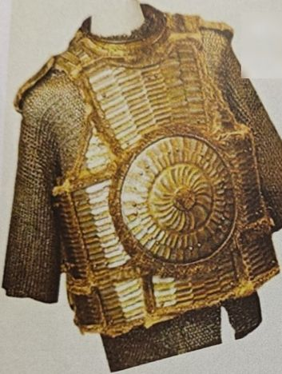

🛡️
عدالة أمير المؤمنين عليه السلاممن حقيبة الفتى المسلم — اضغط «التالي» لتكمل القصة

📍 البداية
وجد أمير المؤمنين علي بن أبي طالب عليه السلام درعه عند رجلٍ نصراني، فأقبل به إلى القاضي شُريح يخاصمه. وكان علي عليه السلام في زمن خلافته، وهو الحاكم على بلاد المسلمين.🗣️ قال علي عليه السلام:
«هذا الدرع درعي، ولم أبِع ولم أهب»
⚖️ فقال شريح للنصراني:
«ما تقول فيما يقول أمير المؤمنين؟»
🗣️ فقال النصراني:
«ما الدرع إلا درعي، وما أمير المؤمنين عندي بكاذب»
⚖️ فالتفت شريح إلى علي عليه السلام فقال:
«يا أمير المؤمنين، هل من بيّنة؟»
(البيّنة: الدليل أو الشاهد)😊 فضحك علي عليه السلام وقال:
«أصاب شريح، ما لي بيّنة»
فقضى بها شريح للنصراني!🚶 فأخذه النصراني ومشى خُطاً ثم رجع فقال:
«أمّا أنا فأشهد أن هذه أحكام الأنبياء، أمير المؤمنين يدنيني إلى قاضيه فيقضي عليه! أشهد أن لا إله إلا الله وأشهد أن محمداً عبده ورسوله، الدرع والله درعك يا أمير المؤمنين»
💚 فقال علي عليه السلام:
«أمّا إذ أسلمتَ فهي لك»
🌟 ماذا نتعلّم من القصة؟
- الحاكم نفسه وقف أمام القاضي مثل أي إنسان — لا أحد فوق العدل.
- القاضي حكم بالدليل، لا بمكانة الشخص.
- علي عليه السلام رضي بالحكم ولم يغضب.
- العدل كان سبباً في هداية الرجل إلى الإسلام.
- وفي النهاية صفح وأعطاه الدرع هديةً — وهذا هو الصفح الجميل.